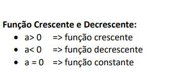

Trimestre 1
Funções
Definição de funções
Função é a relação entre duas grandezas, que chamamos de variáveis, que pode ser
representada por F(x)=ax+b ou Y=ax+b. Também usa-seas variáveis dependentes e independentes.
Exemplo: O preço do estacionamento de um automóvel é cobrado da
seguinte maneira: uma taxa fixa de R$ 5,00 pela entrada mais R$ 3,00 por hora
de permanência. O preço pago pelo motorista que utiliza desse serviço,
depende do número de horas de permanência.
A variável independente é a taxa fixa é o valor da entrada - R$5,00 - que será pago de
qualquer maneira, a variável independente é os R$3,00, já que este depende da quantiedade de
horas que o carro ficará no estacionamento. Caso o carro permaneça por 4 horas a equação
será a seguinte:
|
f(x) = 4
|
Máquina de Funções
Podemos fazer a ligação de uma máquina de funções à um transformador de energia, que por exemplo recebe 220V e transforma em 110v, a máquina de funções faz o mesmo preocesso, porém com números, assim montando um conjunto de entrada X e o transformando em um conjunto Y que corresponde ao valor de saída, ou também chamado de resultado
Definição
-
Função Afim é basicamente quando pegamos a definição básica de função e atribuímos valores aos coeficientes "A" e "B", estes quando colocados em um gráfico irão formar uma reta
-
Método 1:Atribui-se um valor aleatório para x e então, através da tabela encontramos um par ordenado em y.
-
Método 2:Achar o ponto que a reta realiza o corte dos eixos e traça-la,
-
É quando possuimos os valores de x1 e x2 e então consiguimos determinar os valores dos coeficientes A e B, para encontrar podemos fazer de duas formas ou observando a taxa de variação de um número para o outro, ou através de sistemas de equações
Contrução de gráfico
Crescente ou decrescente
imagem retirada do pdf da professora